Vertex attributes "x" and "y" are used as the cartesian coordinates for plotting.
They can be set by layout functions beforehand, or within augment().
plot() internally calls augment().
Arguments
- x
An igraph_ptr object.
- layout
A layout function or a
Vattr(x)-like data.frame with "x" and "y". If not provided,layout_nicely()is applied, which does nothing if "x" and "y" are already set in vertex attributes.- ...
Extra arguments passed to the layout function.
- lwd
Passed to
ggplot2::geom_segment().- cex, col, pch
Passed to
ggplot2::geom_point()andggplot2::geom_text().
Value
augment() returns a data frame to be used with ggplot2::ggplot().
plot.igraph_ptr() returns a ggplot object.
See also
layout_random() and others for layout functions.
Examples
g = graph_tree(5L) |> layout_reingold_tilford()
augment(g)
#> # A tibble: 5 × 6
#> from to x y xend yend
#> <int> <int> <dbl> <dbl> <dbl> <dbl>
#> 1 1 1 0 0 0 0
#> 2 1 2 -0.5 1 0 0
#> 3 1 3 0.5 1 0 0
#> 4 2 4 -1 2 -0.5 1
#> 5 2 5 0 2 -0.5 1
plot(g) + ggplot2::theme_minimal(base_size = 14)
